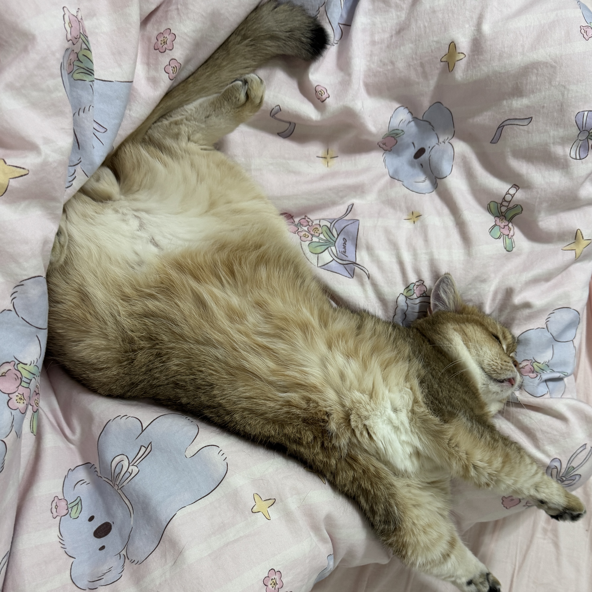
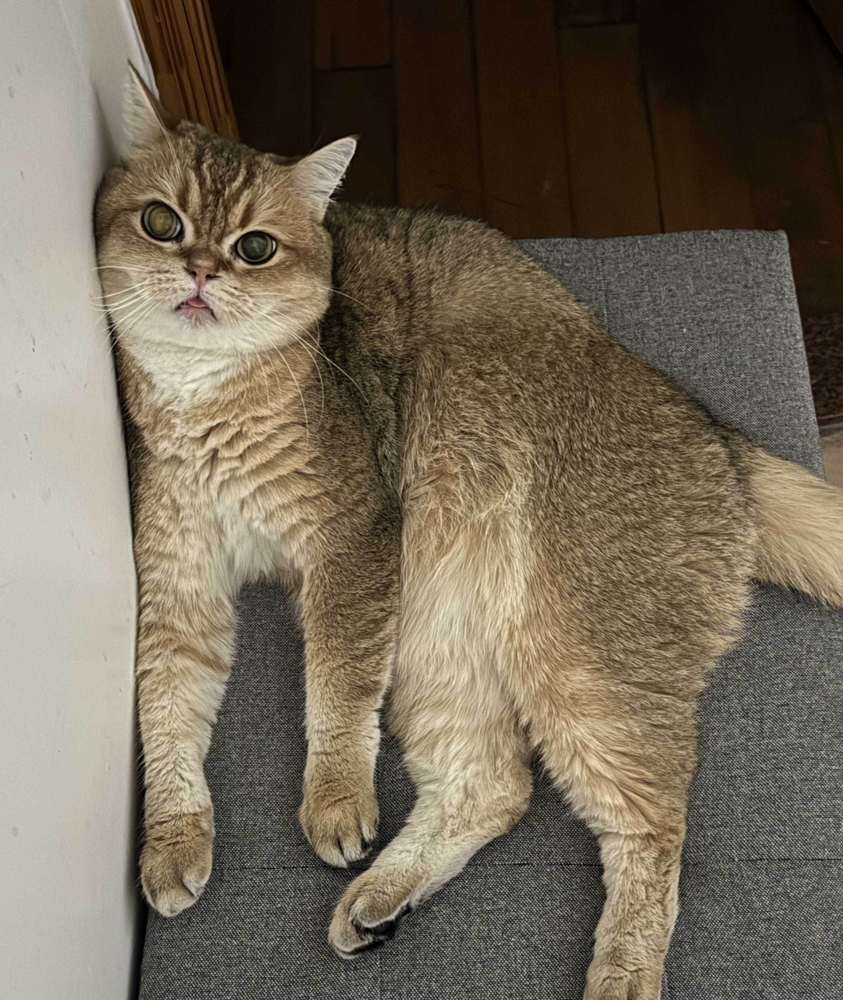

About Me
I love animals because they bring comfort and happiness to people. My favorite pets are cats and geckos because they are cute and relaxing to be around.





I love animals because they bring comfort and happiness to people. My favorite pets are cats and geckos because they are cute and relaxing to be around.

